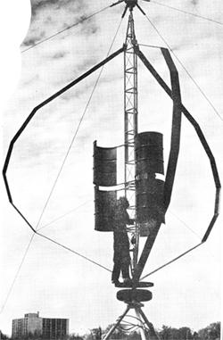

From the alternative energy experimenter's point of view, "free as the wind" is better poetry than economics. The power of the world's moving air masses can be harnessed, of course (and often is, with great success) but the machines designed for the purpose are generally heavy, complex, and expensive. This drawback limits the use of windplants both in developed countries where they usually can't compete with conventional sources of electricity-and poorer nations (which lack the capital for the large initial investment).
Over four years ago, two Canadian scientists-Peter South and Raj Rangi, both affiliated with the National Research Council of Canada's National Aeronautical Laboratory-began work on a simple, lightweight, inexpensive wind device that could be used in developing countries for irrigation and electric power supply. Their finished design seems to offer most of the conventional windplant's advantages without its more serious faults and has aroused a good deal of interest from some unexpected quarters.
The Rangi-South wind turbine consists of two or three blades-of uniform width and symmetrical airfoil shape attached to a vertical shaft. The tower is mounted on ball bearing hubs at both ends and braced with guy wires strung from the top.
The machine has been nicknamed "eggbeater" because of its distinctive curved blades which bulge outward from the vertical axis with no central support at all. This rather eerie-looking feature is an essential part of the design. The Canadian researchers first experimented with straight vanes mounted parallel to the shaft, and found that these needed extensive bracing to withstand the centrifugal forces at high speeds of rotation. Their solution was to redesign the blades as catenary curves the pattern formed by a flexible cord hung between two points. As they hoped, the new shape reduced bending stress to a minimum and eliminated the need for bracing. (A later search revealed an expired patent for the same idea, taken out in 1931 by a French inventor named Darrieus.)
The result is an amazingly simple device, light in weight (onesixth to one-tenth that of a conventional windplant), and able to pick up a breeze from any direction without complex controls to point it into the moving air mass. The only additions required by the basic design are a modest self starting mechanism and a set of aerodynamic 'spoilers to limit the speed of rotation.
What about performance? According to the National Aeronautical Establishment's laboratory report on a wind tunnel investigation, "[The vertical axis wind turbine's] aerodynamic efficiency compares with the current horizontal axis machines. The efficiency that really matters is the cost per unit ,of power produced. This depends on the winds at a given site and the capital cost of the windmill. The vertical axis windmill, due to its simplicity, has the potential for a much lower capital cost than the horizontal axis machines."
The turbine's apparent promise of acceptable performance at low cost has caught the attention of various Canadian government bureaus as a possible means of inexpensive power generation in that country's vast northern wilderness. Meanwhile, the Rangi-South design is also being studied in the U.S. as part of a NASA project on small-scale power plants for family dwellings.
If you have your own ideas for putting the "eggbeater" to work, you should be able to obtain a machine shortly thanks to the Global Wind and Electric Collective, a Canadian group which plans to manufacture and sell such devices through its Odin Vertical Axis Wind Turbines division. The organization has been testing a prototype windplant as the sole power source for its Ontario farm, and hopes to have an informational brochure ready this spring.
The Odin machine will be available under either of two plans: [1] The makers will supply the entire plant, complete with all electrical components. (The exact price hasn't been set but should be less than half that of a conventional unit.) [2] Alternatively, you can order instructions and blueprints and build your own turbine (with some components supplied by the. firm if you desire). The tentative cost of the plans is around $25.00.
Information on wind conditions in your area is available.
|
 |
|
|